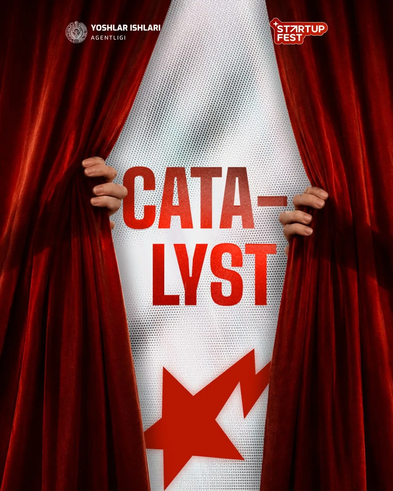

StartupFest moves into industry: introducing Catalyst
Catalyst is StartupFest’s industry track. Not a theoretical exercise — a real problem from a large enterprise, its real specialists, and the people who actually make decisions.

StartupFest has opened a new track: Catalyst. The premise is simple — startups are not built as a classroom exercise, but inside a working industrial enterprise.
For most young teams the hardest part is not coming up with an idea. It is finding out who actually needs their solution. Large enterprises tend to keep their doors closed, and reaching the people who make decisions is close to impossible from the outside. Catalyst exists to close that gap.
How the programme works
Participants get access to large factories and companies: they see the production process with their own eyes and take part in it directly. An experienced specialist from the enterprise is assigned to each team as a mentor — so teams are not guessing at how the system works, they are working alongside someone who knows it from the inside.
Through the day each team is supported by two mentors and five trackers. Teams identify the enterprise’s real problems, build a solution as an MVP with the help of AI, and present it to the company’s leadership.
Why it matters
The pitch is not the finish line. The strongest solutions can continue with the enterprise as a pilot project — which for a young team means a first customer and a first real test.
Catalyst is built for B2B and B2G startups: teams aiming to work with industry, manufacturing and large corporate clients.
This is not a factory tour. It is the day a founder finds out exactly who their product is for.